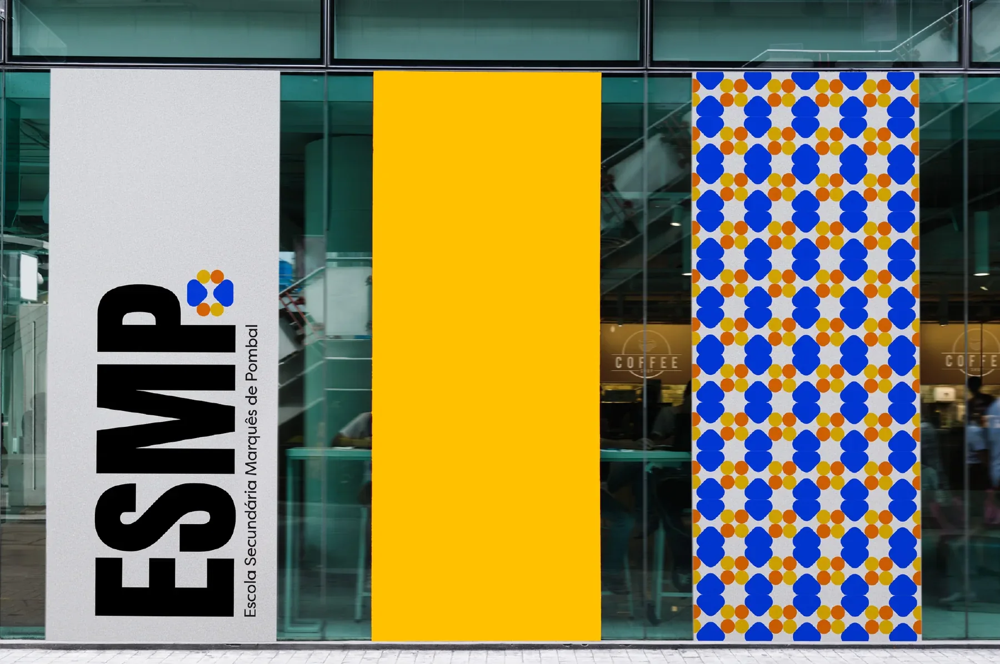

Visual system · Wayfinding
ESMP
A wayfinding system for Escola Secundária Marquês de Pombal in Lisbon, built out of the school's own tiles.

The brief
The problem
Escola Secundária Marquês de Pombal is one of the oldest secondary schools in Lisbon. Our brief was to design a visual system and a wayfinding system for it, starting from a guided visit to the campus.
Overall the school presents itself in a very poor way. There are little to no indications, and those that do exist are either very complicated to understand, or simply not user friendly. Each room is labelled with a number, but that is about it.From my field-trip report
Students, parents and staff entering the building had to rely on their own sense of direction. The only maps were the emergency floor plans.
Concept
Tiles as a guide
The school is proud of its history and of Portugal's, and it shows: portraits of the people who shaped it, old classroom furniture, and azulejos everywhere. We decided to build the whole system out of those tiles, so the signs would feel like they had always belonged to the building.
Process
From tile to component
We took the floral motifs apart and put them back together until one shape could carry the whole system. The final component mixes circles and rounded triangles, taken from the main flower of the school's tiles. Every logo, pattern, frame, arrow and icon is made from it.
Visual identity
Colour, type, logo
The palette keeps the yellow and orange of the existing tiles and adapts the blue to a brighter tint. Each colour got a name from Portuguese culture.
Azulejo
- HEX
- #0041F5
- RGB
- 0 65 245
- CMYK
- 100 73 73 4
Sol
- HEX
- #F5C000
- RGB
- 245 192 0
- CMYK
- 0 22 100 4
Saudade
- HEX
- #FF7700
- RGB
- 254 114 0
- CMYK
- 0 53 100 4
Auton, a tall condensed display face, carries the titles and the logo, in contrast with the round component. Filson Pro handles the reading text. The logo is the school's initials, so it can be read at a glance from the end of a corridor.
System
Lines, frames, labels, arrows
Smaller versions of the pattern became lines and frames for room numbers and small signs. The arrows are the component taken apart: a rounded triangle points the way and the circles trail behind it.
Signage
Pictograms & numbers
24 pictograms cover every space in the school, from the library to the lift. They're based on Google's Material icons, set in a 4×4 grid built from the component. Room numbers use the same frame in all four colourways.
Wayfinding
Finding your way
Each floor has its own colour: orange for the first, yellow for the second, blue for the third. It shows up on the floor maps, on the giant floor numbers at the stairs, on the room signs and on the handrails. Sign sizes follow the rule of 1 inch of letter height for every 10 feet of reading distance, and every sign is placed around eye level.
Infographic
The history wall
To give the entrance some of the pride we felt on the visit, we designed a wall infographic: the school's history from its opening in 1884 to today, with every director along the timeline.
Mock-ups
In place
The system applied across the school and its surroundings.
Team
Team of three
- Bárbara Pinho
- Gabriela Ramos
- Henrique Cação
- All three of us designed the visual system, the shape studies and the mockups together.
- IADE, Universidade Europeia · Global Design · 2023